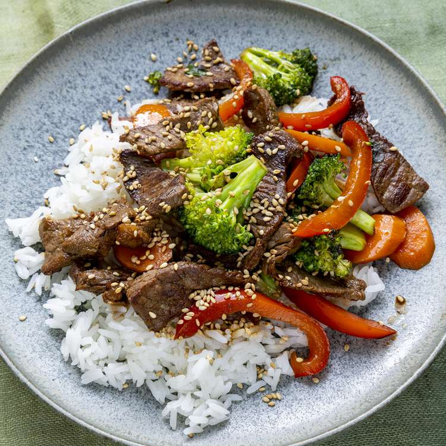

Quick and easy beef stir-fry
Heat vegetable oil in a large wok or skillet over medium-high heat; cook and stir beef until browned, 3 to 4 minutes. Move beef to the side of the wok and add broccoli, bell pepper, carrots, green onion, and garlic to the center of the wok. Cook and stir vegetables for 2 minutes.
Stir beef into vegetables and season with soy sauce and sesame seeds. Continue to cook and stir until vegetables are tender, about 2 more minutes.
